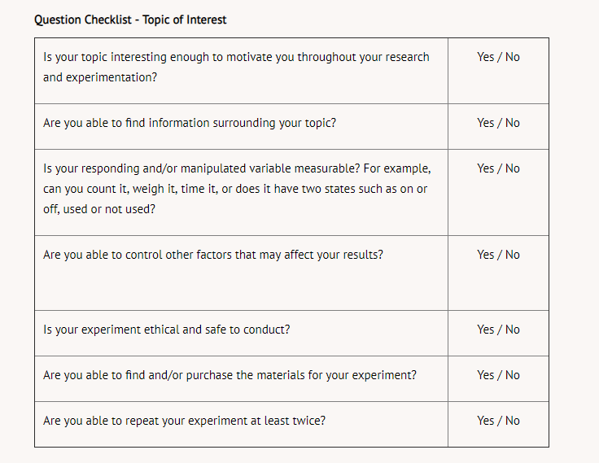

The research design is a specific plan the researcher(s) uses for the:
The research design is often put together and presented as a research proposal before any research is conducted. A psychology research proposal is an academic document that a person submits to propose a research project, specifically in the field of clinical psychology. The purpose of research proposals is to outline the research questions and summarize your selected research topic. Another necessary reason for creating this proposal is to present ways that you think would be best in conducting the study and justifying it.
What is the purpose of research design? The short answer to this question is that it helps researchers find answers to their research questions in the 'best' way possible.
Imagine that you are trying to find out about your class's preferences about ice cream. You could go about this by asking each person individually, but with a group of potentially 25-30 people, this could take time. You may not get straightforward answers. It may be better to consider creating a questionnaire or a poll.
Consider this on a large scale. With complex hypotheses, lots of variables, and many research subjects, researchers have to be careful about how they carry out their research, as this can affect what kind of data they get.
Before construction workers build a new structure, architects create the design or blueprint. The same can be said for scientists. Before an experiment is conducted, a procedure must be outlined. Procedures are created only after a question has been posed, background research completed, and the variables outlined in a hypothesis.
Psychological experiments focus on behaviour. To illustrate how a topic can be evaluated as a possible research project, please review the two examples below.
You and your friend have an argument about making ice cubes. You believe that filling the ice cube tray with warm water instead of cold water reduces freezing time. Your friend believes the opposite. He thinks cold water will result in a shorter freezing time as compared to warm water.
Pet owners can buy dog food bowls in many colours (white, black, pink, green, orange, etc.). You have read that people often eat more food than they normally would if they are eating from an orange or yellow plate instead of a white plate. You wonder if the colour of a dog food bowl affects the amount of food dogs eat.
Ask yourself:
Is the problem related to behaviour (either human or other animal)?
Answer:
In this example, the outcome you and your friend want to observe relates to a physical phenomenon (freezing of water), not a behavioural one. This type of experiment would be suited to the physical sciences but not the psychological sciences.
In this example, because eating behaviour is the focus of the question, it is an acceptable topic.
If it does, then it is likely an acceptable topic and you can move on to going through the Checklist below that was introduced in Module 1 to further determine the suitability of the topic for research:
